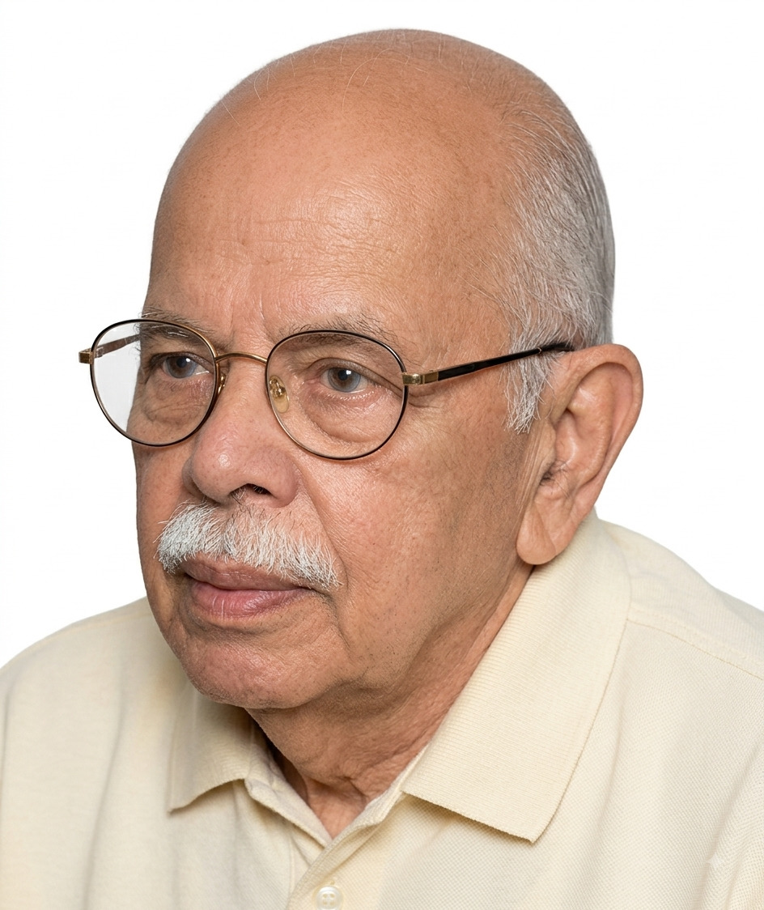

Profile at a Glance
Qualification
G.M.V.C., B.V.Sc., M.S.
Position
Professor and Head,
Department of Veterinary Pathology,
Madras Veterinary College
Area of Contribution
Veterinary Pathology
Dr. K. P. Chandrasekharan
G.M.V.C., B.V.Sc., M.S.
Professor and Head
Department of Veterinary Pathology
Madras Veterinary College
Leadership in Veterinary Pathology
Dr. K. P. Chandrasekharan served as Head of the Department of Veterinary Pathology, Madras Veterinary College, from 2 September 1947 to 8 April 1948 and subsequently from 1956 to 1969.
His long association with the Department coincided with an important period in the development of Veterinary Pathology as a major teaching, research and diagnostic discipline at Madras Veterinary College.
A Departmental Pioneer
Dr. Chandrasekharan was one of the foundational figures who helped build and establish the Department of Veterinary Pathology at Madras Veterinary College.
His academic and professional contributions helped develop the Department into an important centre for veterinary pathology teaching, research and diagnostic work.
Pioneering Work on Rubarth's Disease
One of Dr. Chandrasekharan's major areas of research was Hepatitis Contagiosa Canis, commonly known as Rubarth's disease.
He was the first to identify Rubarth's disease in India, and the finding was reported in 1954.
This represented an important contribution to the recognition and understanding of infectious canine diseases in India.
Confirmation by Prof. Rubarth
The significance of Dr. Chandrasekharan's observation received further recognition when Prof. Rubarth of Sweden visited the Department of Veterinary Pathology.
During his visit, Prof. Rubarth confirmed the finding, adding considerable significance to Dr. Chandrasekharan's pioneering diagnostic work.
Development of the Pathology Museum
During Dr. Chandrasekharan's tenure as Head, considerable attention was given to the development of the Departmental Pathology Museum.
The museum became well equipped with more than 350 gross pathological specimens.
These specimens were collected primarily from routine autopsy examinations, with additional material obtained from biopsy specimens.
The collection provided students with an invaluable opportunity to study gross pathological lesions directly and strengthened the practical teaching of Veterinary Pathology.
Research in Avian Pathology
Dr. Chandrasekharan also made important early contributions to avian pathology.
His research included diagnostic haematological investigations associated with viral diseases, including Ranikhet disease.
Such investigations contributed to the development of diagnostic approaches to important poultry diseases during an era when laboratory diagnostic facilities were comparatively limited.
Contributions to Bovine Pathology
His scientific interests also extended to bovine pathology.
Through his research and diagnostic work, Dr. Chandrasekharan contributed to the understanding of pathological conditions affecting livestock and added substantially to the veterinary literature of his period.
Teaching, Diagnosis and Research
Dr. Chandrasekharan's contribution to Veterinary Pathology encompassed three closely connected areas: teaching, diagnostic pathology and scientific research.
The development of the museum, his investigations into infectious diseases and his contribution to veterinary literature helped provide students and younger pathologists with a strong academic foundation.
An Enduring Contribution
Dr. K. P. Chandrasekharan occupies an important place in the history of Veterinary Pathology at Madras Veterinary College.
His pioneering identification of Rubarth's disease in India, his contributions to avian and bovine pathology, and his development of the Departmental Museum reflect the breadth of his contribution.
His work helped establish a strong tradition of pathological teaching, research and diagnosis for succeeding generations of veterinary pathologists.
Reminiscence compiled by Dr. C. Balachandran.
Audio narration will be added here when available.
Additional historical photographs will be added here.